अध्याय 6: a, an, the (Articles)¶
a, an, the — तीन छोटे शब्द, बड़ा फ़र्क
हिंदी में article नाम की कोई चीज़ नहीं होती। "मैं डॉक्टर हूँ" — बस, काम हो गया। इसलिए जब हम English बोलते हैं तो दिमाग़ वही आदत दोहरा देता है: "I am doctor." Grammar की किताब में यह छोटी गलती लगती है, पर सुनने वाले को तुरंत पता चल जाता है। अच्छी खबर: article का फ़ैसला सिर्फ़ तीन सवाल का जवाब है, और वे तीन सवाल इस चैप्टर में हमेशा के लिए साफ़ हो जाएँगे।
एक लाइन में
An article is a small word before a noun that tells the listener whether you mean any one of something (a / an) or that particular one (the). Article बताता है — "कोई भी एक" या "वही खास वाला"।
- I need a pen. मुझे एक pen चाहिए — कोई भी pen, कौन सा, फ़र्क नहीं पड़ता।
- I need the pen. मुझे वह pen चाहिए — जो दोनों जानते हैं, वही खास pen।
- I need pens. मुझे pen चाहिए (general बात) — यहाँ कोई article नहीं लगता।
6.1 फ़ैसला लेने का flowchart¶
हर बार जब आपके सामने एक noun आए, ये तीन सवाल पूछो — क्रम से। जवाब अपने-आप मिल जाएगा। शुरुआत में यह धीमा लगेगा; दो हफ़्ते में यह अपने-आप होने लगेगा।

6.2 a या an — अक्षर नहीं, आवाज़ देखो¶
यहाँ सबसे बड़ी गलती यह सोच है कि "vowel से शुरू होने वाले शब्द के पहले an लगता है"। Rule अक्षर का नहीं, आवाज़ का है। बोलकर देखो — अगर मुँह से पहली आवाज़ vowel निकलती है, तो an।
| शब्द | पहली आवाज़ | सही | क्यों |
|---|---|---|---|
| hour | aa- | an hour | "h" चुप है — आवाज़ vowel से शुरू |
| honest | o- | an honest man | "h" चुप है |
| university | yu- | a university | "yu" consonant जैसी आवाज़ है |
| useful | yu- | a useful book | वही "yu" आवाज़ |
| one-rupee coin | wa- | a one-rupee coin | "one" = "wan", consonant आवाज़ |
| MBA | em- | an MBA degree | M को "em" बोलते हैं — vowel आवाज़ |
| LIC agent | el- | an LIC agent | L = "el" |
| European | yu- | a European country | "yu" आवाज़ |
Short-form का पक्का test
Short form (MBA, SP, FIR, NGO, RTI) के साथ हर अक्षर की आवाज़ बोलो। जो अक्षरों की आवाज़ vowel से शुरू होती है — A, E, F, H, I, L, M, N, O, R, S, X — उनके पहले an। बाकी के पहले a।
an FIR · an NGO · an RTI · a BJP leader · a CA · a PhD
6.3 "the" कब लगता है — सात पक्के मौके¶
| मौका | Example |
|---|---|
| दूसरी बार ज़िक्र (पहली बार "a") | I saw a dog. The dog was limping. |
| दुनिया में एक ही चीज़ | the sun · the moon · the sky · the earth |
| Superlative और ordinal | the best player · the first bus |
| नदी, समुद्र, पहाड़ की श्रृंखला, रेगिस्तान | the Ganga · the Arabian Sea · the Himalayas · the Thar |
| बाजे (musical instruments) | She plays the flute. |
| अखबार, किताब के नाम, इमारतें | the Hindu · the Gita · the Taj Mahal |
| देश जिसके नाम में plural या "of" हो | the Netherlands · the United States · the Republic of India |
पहला मौका सबसे ज़रूरी है, इसलिए उसे एक बार सुन लो:
- Yesterday I met a teacher. The teacher told me about this book. पहली बार "a teacher" — सुनने वाला नहीं जानता कौन। दूसरी बार "the teacher" — अब जानता है।
6.4 Zero article — जहाँ कुछ नहीं लगता¶
यह लिस्ट याद रखनी ज़रूरी है, क्योंकि यहाँ Indian English "the" घुसा देती है जहाँ ज़रूरत नहीं होती।
| श्रेणी | सही | गलत |
|---|---|---|
| General plural | Dogs are loyal. | The dogs are loyal. |
| Uncountable (general) | Milk is good for health. | The milk is good for health. |
| लोगों और जगह के नाम | Ravi lives in Jaipur. | The Ravi lives in the Jaipur. |
| भाषा | She speaks Marathi. | She speaks the Marathi. |
| खेल | He plays cricket. | He plays the cricket. |
| खाना | We had lunch at two. | We had the lunch at two. |
| सवारी — by + vehicle | I came by bus. | I came by the bus. |
| जगह जब काम के लिए जाओ | go to school · go to bed · go to court | go to the school (पढ़ने के लिए) |
| साल, महीना, दिन | in 2026 · on Monday · in June | in the 2026 |
'go to school' vs 'go to the school' — दोनों सही, मतलब अलग
go to school = पढ़ने जाना (काम के लिए) — My son goes to school.
go to the school = उस इमारत तक जाना — I went to the school to meet the principal. यही फ़र्क hospital, college, church, prison, court के साथ भी चलता है।
6.5 एक ही noun, तीन रूप — फ़र्क महसूस करो¶
| वाक्य | मतलब |
|---|---|
| A tiger is dangerous. | कोई भी एक बाघ — एक example के तौर पर। |
| The tiger is dangerous. | वह खास बाघ, जिसकी बात हो रही है। |
| Tigers are dangerous. | बाघ (पूरी प्रजाति) खतरनाक होते हैं। यह सबसे natural है। |
एक छोटा सा test
Confusion हो तो अपने-आप से पूछो: "कौन सा?"
अगर जवाब आता है ("वही जो कल लाया था") → the।
अगर जवाब है "कोई भी" → a / an।
अगर सवाल ही बेमानी है ("कौन सा दूध?" — पूरा दूध general में) → कुछ नहीं।
6.6 वे गलतियाँ जो हम सच में करते हैं¶
Article की top गलतियाँ
- गलत: I am engineer.
- सही: I am an engineer.
-
क्यों: काम-धंधा बताते वक़्त English में article लगता है — a doctor, an engineer, a teacher। हिंदी में "मैं engineer हूँ" काफ़ी है, English में नहीं।
-
गलत: He is going to the office by the bus.
- सही: He is going to the office by bus.
-
क्यों: "by + vehicle" के साथ article नहीं — by bus, by train, by car, by auto, on foot।
-
गलत: She plays the cricket very well.
- सही: She plays cricket very well.
-
क्यों: खेल के साथ article नहीं। पर बाजे के साथ लगता है: she plays the guitar।
-
गलत: The honesty is the best policy.
- सही: Honesty is the best policy.
-
क्यों: भाव वाले uncountable nouns (honesty, love, patience, anger) general बात में बिना article आते हैं। पर "the best" में "the" ज़रूरी है — superlative है।
-
गलत: I have a good news for you.
- सही: I have good news for you.
-
क्यों: "news" uncountable है — इसके पहले "a" नहीं लगता। एक खबर कहनी हो तो: a piece of good news।
-
गलत: She went to the home early.
- सही: She went home early.
-
क्यों: "home" के साथ न article लगता है, न "to" — go home, reach home, stay home।
-
गलत: My father is a best cook in our family.
- सही: My father is the best cook in our family.
-
क्यों: Superlative (best, tallest, first) के पहले हमेशा "the" — क्योंकि वह एक ही हो सकता है।
-
गलत: He gave me a advice.
- सही: He gave me some advice.
- क्यों: advice, information, furniture, luggage, equipment, work — ये सब uncountable हैं। "a" नहीं, "some" या "a piece of" चलेगा।
तीन बातें जो काफ़ी हैं
1. काम-धंधा बताओ तो article लगाओ — I am a teacher.
2. पहली बार "a / an", दूसरी बार "the"।
3. General plural और general uncountable → कुछ नहीं।
6.7 प्रैक्टिस — Articles¶
अभ्यास 1
My brother is ___ MBA student.
- a
- an
- the
- कुछ नहीं
संकेत: M को बोलकर देखो — कौन सी आवाज़ निकलती है?
उत्तर
an
M की आवाज़ 'em' है — vowel से शुरू। इसलिए 'an MBA'। अक्षर M consonant है, पर आवाज़ vowel है, और rule आवाज़ का है।
अभ्यास 2
She studies at ___ university in Pune.
- a
- an
- the
- कुछ नहीं
संकेत: University बोलकर देखो — yu या u?
उत्तर
a
'University' की पहली आवाज़ 'yu' है, जो consonant जैसी है। इसलिए 'a university' — 'an university' गलत है।
अभ्यास 3
___ Himalayas are in the north of India.
- A
- An
- The
- कुछ नहीं
संकेत: पहाड़ की श्रृंखला का नाम है।
उत्तर
The
पहाड़ की श्रृंखला, नदी और समुद्र के नाम के पहले 'the' लगता है — the Himalayas, the Ganga, the Arabian Sea।
अभ्यास 4
___ milk is good for children. (general बात)
- A
- The
- An
- कुछ नहीं
संकेत: General बात है, कोई खास दूध नहीं।
उत्तर
कुछ नहीं
Uncountable noun जब general मतलब में आए तो article नहीं लगता। 'The milk' सिर्फ़ तब जब कोई खास दूध हो — जैसे fridge में रखा हुआ।
अभ्यास 5
I saw a snake in the garden. ___ snake was bright green.
संकेत: दूसरी बार ज़िक्र हो रहा है।
उत्तर
The
पहली बार 'a snake', क्योंकि सुनने वाला नहीं जानता था कौन सा। दूसरी बार 'the snake' — अब दोनों जानते हैं किस साँप की बात है।
अभ्यास 6
इस वाक्य में एक शब्द गलत है — उस पर tap करो।
My uncle is a honest officer in the railways.
उत्तर
गलत शब्द: a.
सही रूप: My uncle is an honest officer in the railways.
'Honest' में h चुप है — आवाज़ 'o' से शुरू होती है, इसलिए 'an honest'। Rule अक्षर का नहीं, आवाज़ का है। इसी तरह an hour, an heir।
अभ्यास 7
Rohit is ___ tallest boy in our class.
संकेत: Superlative है।
उत्तर
the
Superlative (tallest, best, first) के पहले हमेशा 'the', क्योंकि ऐसा सिर्फ़ एक ही हो सकता है।
अभ्यास 8
इस वाक्य में एक गलती है — गलत शब्द पर tap करो।
My brother comes home by the bus every evening.
उत्तर
गलत शब्द: the.
सही रूप: My brother comes home by bus every evening.
'by + vehicle' के साथ article नहीं लगता — by bus, by train, by car। 'The' यहाँ से हटाना है।
अभ्यास 9
गलत शब्द ढूँढो।
My sister plays the cricket after school.
उत्तर
गलत शब्द: the.
सही रूप: My sister plays cricket after school.
खेल के नाम के साथ article नहीं आता। बाजे के साथ आता है — 'plays the guitar' बिल्कुल सही है।
अभ्यास 10
एक शब्द गलत है — पकड़ो।
She gave me a very useful information.
उत्तर
गलत शब्द: a.
सही रूप: She gave me very useful information.
'Information' uncountable है, इसलिए 'a' नहीं लगता। गिनना हो तो 'a piece of information' बोलो।
अभ्यास 11
वाक्य को उसके सही article से जोड़ो।
| A | B |
|---|---|
| ___ sun rises in the east | a |
| I want ___ apple | कुछ नहीं |
| He is ___ good teacher | the |
| ___ children love sweets | an |
उत्तर
___ sun rises in the east — the; I want ___ apple — an; He is ___ good teacher — a; ___ children love sweets — कुछ नहीं
दुनिया में एक ही चीज़ → the। Vowel आवाज़ → an। Consonant आवाज़ → a। General plural → कुछ नहीं।
अभ्यास 12
सही क्रम में वाक्य बनाओ।
शब्द: a / in / engineer / private / I / am / an / company
उत्तर
I am an engineer in a private company
काम-धंधा बताते वक़्त article ज़रूरी है — 'an engineer'। और 'company' पहली बार आई है, इसलिए 'a private company'।
अभ्यास 13
अब यह लाइन बोलकर देखो — दोनों article साफ़ बोलने हैं।
उत्तर
बोलो: I bought a book and the book was very good
पहली बार 'a book', दूसरी बार 'the book'। बोलते वक़्त 'the' से पहले हल्का रुक जाओ — इससे सुनने वाले को पता चलता है कि आप उसी किताब की बात कर रहे हो।
आगे क्या करो
आज अखबार की एक खबर लो और हर a, an, the पर pencil से गोला लगाओ। फिर खुद से पूछो — "यह यहाँ क्यों है?" यह एक exercise article को हमेशा के लिए पक्का कर देती है, किसी rule को रटने से ज़्यादा।